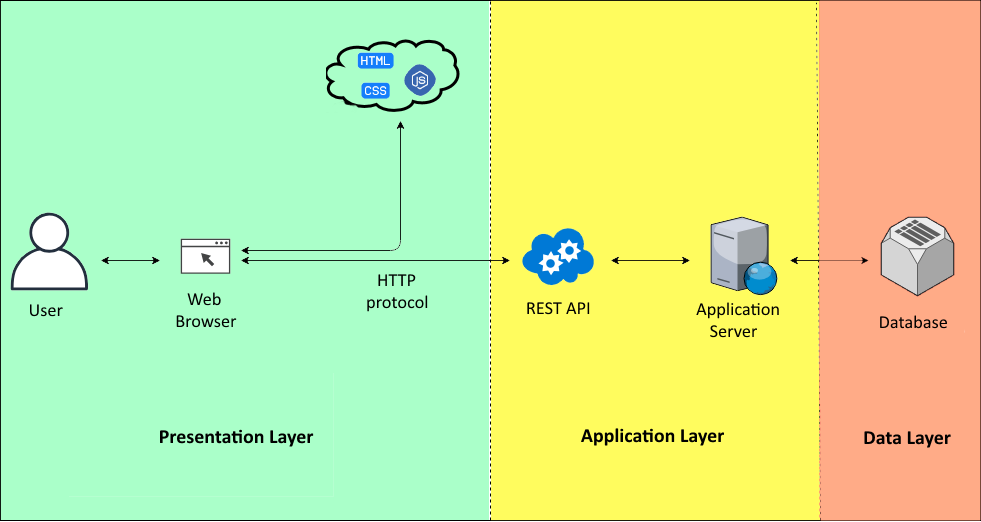
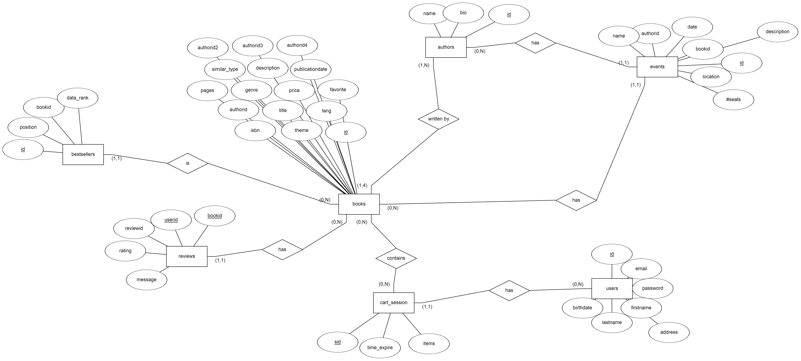

Documentation of the Backend part
Deliverable D1
| 1 |
administrator |
Salvatore |
Bova |
912868 |
salvatore.bova@mail.polimi.it |
| 2 |
member |
Luca |
Colombo |
920123 |
luca.colombo50@mail.polimi.it |
Links to other deliverables
- Deliverable D0: the web application is accessible at this address.
- Deliverable D2: the YAML or JSON file containing the specification of the app API can be found at this address.
- Deliverable D3: the SwaggerUI page of the same API is available at this address.
- Deliverable D4: the source code of D0 is available as a zip file at this address.
- Deliverable D5: the address of the online source control repository is available this address. We hereby declare that this is a private repository and, upon request, we will give access to the instructors.
Specification
Web Architecture

We ensured that HTML it's not rendered server side because we send to the browser only data in format json which have to be used and rendered by the js file of the front-end part that made the request HTTP.
API
REST compliance
We used REST to exposes information about our website in the form of information about its resources. Through REST we enabled the client to take actions on those resources, such as create new resources (i.e. create a new user) or change existing resources (i.e. add/remove items to cart, add review). With a maturity model level 2: indeed to get the same resource each time we can invoke GETs safely any number of times in any order and getting the same results each time. While to add, modify or delete we used the HTTP methods: POST, DELETE and PUT.
OpenAPI Resource models
For the resources we introduced the following model:
- Book
- Bestseller
- Review
- Author
- Event
- User
- Cart
These schema objects allow the definition of input and output data types. These types can be objects, but also primitives and arrays.
Data model
The following image is the ER diagram used in the data layer of our web application. How it can be seen there is full correspondence between the API resource model and the data model.

Implementation
For the backend of the application we used nodeJS, so as language Javascript, with its framework Express, we also used many packages (how it can be seen in the package.json file) to implement various function (i.e. 'bcrypt' package to encrypt sensible data or 'cookie' to use cookies in our website).
Discussion
1. How did you make sure your web application adheres to the provided OpenAPI specification?
2. Why do you think your web application adheres to common practices to partition the web application (static assets vs. application data)
3. Describe synthetically why and how did you manage session state, what are the state change triggering actions (e.g., POST to login etc..).
4. Which technology did you use (relational or a no-SQL database) for managing the data model?
- We ensure that our web application adheres to the provided OpenAPI specification defining precise endpoints for each possible request and handling the response through the Routing methods offered by Express;
- Our application adheres to the common practices of partition of the web application because we made accessible only resources present in the public folder using the express.static method.
- For what regard the session states of our website we had two of them to handle, one for the user session and one for the cart session. And we used two different method to accomplish our goal, for what regard the user session we stored it on the client within a cookie using the module cookie-session, while for what regard the cart session we stored only a session identifier on the client within a cookie and stored the session data on the server, more precisely in the database using the module express.session. The state change triggering actions are: for what regard user session POST to login and signup and a DELETE to logout, while for the cart session we have POST to add a book, DELETE to empy the cart, PATCH to remove one item.
- For what regard the data layer we decided to use a relational databases, because we were more practical with them, so we decided to use PostgreSQL and to connect it with our project we used KNEX.
Task assignment
- Salvatore Bova worked on front end (30%), backend(70%), OpenApi Spec(50%)
- Luca Colombo worked on front end (70%), backend(30%), OpenApi Spec(50%)
Analysis of existing API
For what regard the Book, Author, Event parts of our API we have been inspired from this API because it helped us to model the structure of our API, while for what regard the session parts (login/signup/logout and cart) we have been inspired by this API because helped us with the structure of the cart and with the end points for the users, but we decided to use different HTTP methods to stay close to the REST principles.
Learning outcome
- Salvatore Bova learned Javascript language, but there are still some doubts about how promises works, but he wants to make his own web application to improve his knowledge and test new things.
- Luca Colombo improved his HTML and CSS skills, he wants to do more experiences with Javascript though, so probably he will help Salvatore to develop his own website.